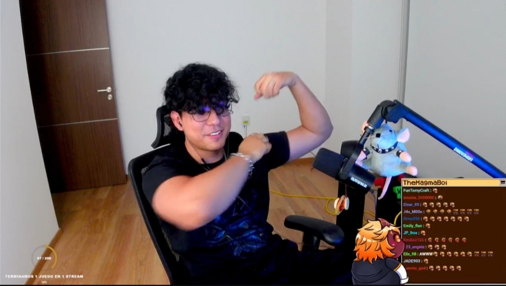

¡Primera Noticia!
Hola bros bienvenidos a la primera noticia de la página web, estare subiendo noticias cada semana. Por cada cuadro de noticias estara un 1 stream de la semana . tambien hare uno de tgreys cuando vea que este este listo o que tenga estabilidad. Este es el stream mas viejo porque iré de el más viejo al más nuevo.

El ultimo stream fue hace 4 semanas titulado: Minecraf pero se genera el mundo si caminas+ Roblox Monochroma+ Failsroom y también 2 reacciones. Magma empezo contando sobre su dia, fue al gimnasio e hizo rutina de brazo (le dolia su brazito). Conto que ese dia llamo al de limpieza, por que tenia rato que no venia a hacer limpieza dijo que llegara a las 2:00 por que a las 5 "iba venir gente" pero el de la limpieza termino llegando a las 3:30(valiendo verga ya ni modo que se quede). siguio contando, pero los bros lo interumpieron porque querian ver a jorgito y al fin si lo mostro. Bueno bros se ceno 2 hamburguesas grandes y hasta se desayuno una de 3 carnes pero era dia de gym asi que se la gano, el dia anterior fue a comprar ropa con una amiga y dijo "umm voy a salir, y me van a dar un consejo femenino y aprovecho y me compro más ropa y accesorios" bueno fueron con la finalidad de comprar ropa y accesorios y se compro otro anillo. Entonces con la amiga se fueron a un basar (o tianguis) y entraron, caminaron y habia era pura comida y pensaron que era la zona de comidas, siguieron y llegaron al final... se metieron a un tianguis de pura comida bro. Bro literal salio a dar una vuelta y no compro nada pero si su amiga que el decía que era como de Snoopy. Luego siguió hablando un poco y el iba a reaccionar a un vídeo viejo suyo de armando una silla gamer, antes de eso mostro un rato su tiktok para mostrar unos edits de la comunidad, mientras hablaba con el chat le apareció un clip de capitan gato rapeando de que extrañaba a su hermanito ya saben, entonces el se puso a responderle el rap que hizo cap y después si reaccionóReaccionando, conto anecdotas pasadas

Conto que el una vez le pidió consejo a una chica que era más grande en el sentido de contenido y sabía más que el, magma le pidió consejo de que micrófono comprar, la chica le recomendó uno para cuando hiciera cover pero para los gameplays magma descubrió que eran inservibles, también dijo que un creador más grande que el lo bardeo (osea le tiró ) porque el estaba editando y magma le puso easy y el chico le respondió que no sabía ni mierda y eso que magma lo hizo sin malas intenciones. Magma intento ver la música que el hacía o mejor dicho covers que hacía antes(pequeño bro era cantante), mostró la música también que escuchaba antes y se encontró un cantante que le gustaba pero el chico dejó de hacer música dijo que le encantaba cuando el queria hacer rap. Ya después no más dió los saludos y la comida y después vio comunidad
En la parte de comunidad no contare solo dejare fotos


luego de comunidad antes de empezar a jugar hablo un poco más de su vida y como le iba, bueno conto unos problemas de que quiere dejar de sobrevivir y empezar a vivir ya saben pero no todo es malo por qué empezó a salir más, a comprar, a conocer a aprender porque los bros dicen que a veces su día va de la mierda y magma les dijo que "hay días buenos como también días malos pero no todo en la vida tiene que ser malo, si una rosa te pincha no significa que todas te hagan lo mismo" el siguió hablando con los bros de eso. bueno después de esa proyectada la pool ganó a que empezaran con Minecraft.
Bueno dijo que el mod era para jugar con amigos pero en ese momento estaban en desafío así que le tocó solito


Minecraft pero el mundo se genera si caminas
Empezó en el bioma de SIEMPRE así es el de hielo, el objetivo era claro conseguir diamantes así que le quedaba un largo camino que hacer... Literalmente.
Cuando empezó como dijo en el inicio literalmente estaba jugando solo así que bro empezó a rolear cómo si fuera tiroloco y capitan gato osea saco su lado ezquiso y bro dijo cosas como Magma:Oye tiro que te paso Tiromagma:a bro se me cayó mi techo bro Magma:a bro que mal, y tú cap Capitan magma:🤓en bueno hermanito emm el otro día invite a una vtuber bro y así este umm pe' causa Bro magma estaba en el borde de la locura literal. Siguió así como loco hablando con sus personalidades bros literal se peleo con magmatiro y saco a tiro del server y a los 5 minutos a capitan magma, y también por hablar de tiroloco le cayó la tirómaldición y se murió en un charco de lava que tiropendejo se tuvo que hacer todo de nuevo. No resumiré todo el vídeo solo una parte de el inicio y el final. Intento hacer una cama pero bueno las ovejas no colaboran literal no aparecian haci que vio hierro y fue a buscarlo y el tiropendejo se tapo el mismo casi se ahoga porque debajo de el hielo pues había agua y casi, casi y si no era con agua era con bloques. Se puso a cambiar la música y que para que la producción la cambie ya estaba loco, magma siguió y consiguio hierro y carbón. Bueno magma conto unas historias también como es costumbre ayer que salió con su amiga ella le dijo que cuando era pequeña ella podía ver muertos y magma dijo"ohhh y que más " y que una amiga de su mamá la exorciso y magma "que verga, mi mamá no tenía amigas..." Se nota el interés de magma en esa conversación. Mas magma si encontró el diamante en una construcción de cobre sub- terranea no diamante si no un casco de diamante pero literal no duró ni 10 minutos y lo mató un zombie y de paso cayó al vacío los materiales no había posibilidad y hay si termino el Minecraft.
Failsroom


El juego trataba de los backrooms literal osea tenía los mapas la estética excepto que era como un meme de los backrooms literal nada daba miedo, uno se espera en cualquier momento un screamer pero no solamente que eran los objetos que te aparecían cerca, pero aún así magma se asusto e incluso algunos bros creo que también yo lo estoy viendo de noche y si me dieron varios sustos

Magma entro en una habitación y hizo noclip osea traspaso el suelo y cayó a otro nivel de los backrooms que es los poolrooms y hay se llevó un screamer pero de un pato el juego literal no tenía sentido de un momento a otro las paredes te llevan a cualquier lado.

Al final magma termino peleando con un skibidi toiled todo mamado

Pero era una demo
Roblox Monochroma
El juego era básicamente hay un mounstro o demonio que te persigue como en una oficina tienes que conseguir 4 llaves y un código para escapar. Magma busca las llaves pero el bicho ese bro es muy rápido y hay que escuchar de dónde viene para esconderse. Magma le faltaba 1 llave y el juego se bugeo, el se escondió y el bicho estaba en frente de el así que derrepente lo mató.

Pero magmaboi lo hizo de nuevo y ahí si gano pero es una demo como Failsroom ahora sí las reacciones.
Mi amiga obsesionada con migo
El vídeo era de jarex cuenta que cuando el estaba en último año de secundaria el tenía una amiga que el le puso Mónica...(Le tocó una fibra sensible a magma y a los bros de corazón 😞) Literal magma hasta miro la camara y todo, bueno ellos se hicieron amigos porque les gustaba dibujar y porque los dos eran retraídos de la sociedad osea ellos dijeron que eran los raros. Siguiendo el se le empezó a hacer raro que ella lo seguía(obvio) porque osea el iba al baño y ella lo esperaba, claro dijo magma algunas personas que casi no tienen amigos hacen eso, porque para otros es incómodo pero para ellos es normal claro no es que los defienda porque si es un poco raro. Jarex cuenta que ella tampoco es que era la favorita de Diosito, era flaquita bajita y así y jarex dijo bueno tampoco es que yo esté guapo y en forma pero ella tampoco es que estaba bonita por así decirlo. Bueno ella tenía una libreta que era dónde tenía sus dibujos y le mostraba a jarex pero había unas páginas que nunca mostraba y Jarex pensó que eran dibujos feos o furros... Desearía que fueran furros dijo Jarex. Un día ella estaba sacando unas cosas de su bolso cuando cae la libreta y se habré en la parte de esos dibujos (conveniente mente🤨🤨) y el lo recoge y ve los dibujos... Eran ellos haciendo. Ya saben y otro era ella abrazandolo pero el estaba embarazado que VERGA. Pues si después de eso a jarex le empezó a gustar una chica que eventualmente Mónica se daría cuenta, y lo iso cuando ella se enteró se empezó a distanciar de el y también a hablar mal. Ya casi terminando jarex dijo que la chica que a el le gustaba si era bonita y 3 Grandes razones 🤨, jarex dijo que no solo eran esas razones si no que a el le gustaba hablar con ella. De pronto empezo a salir una cuenta de Instagram para tirarle mierda literal decía cosas que no eran ciertas, pero jarex ni sabía porque el estaba haciendo un plan mayor, que era declararse, compró flores hizo una pancarta y una carta. En fin llegó el día, le dijo que hace tiempo el sentia cosas por ella y así el le entrego las flores y la carta pero la chica le cambio la cara y le dijo que no, que ella leyó lo que el era en realidad y lo dejo así. Jarex como hombre macho pecho peludo se fue llorando y le contó a sus padres, su mamá se emputo más que el y fue al día siguiente y se lo dijo a la directora que también se enojo mucho y ese día fue al salón de jarex y pregunto empezó a presionar a todos y dijo que si nadie decía lo buscarían y le dirían a sus padres y que si lo de jarex era cierto que lo dijeran y que mostraran las pruebas y claro Mónica lo admitio y dijo que era por celos y así. En fin le dijeron que lo borrara y a ella la suspendieron por unos días, ya después de eso no hablaron más y cada quien su camino eso fue todo.
Anécdotas de la escuela
El vídeo comienza con magma saluda a los bros, el vídeo dijo hola soy Eimi "hola Eimi (dijo magma)"y magma se acordó cuando en la escuela le preguntaban tres cosas interesantes de el y el dijo Número 1: una vez prestó su voz para un comercial de radio de su ciudad Número 2: tiene una cicatriz en la frente que se ISO de bebe Número 3: su nombre maximiliANO Atermina en ANO Bueno la chica cuenta que sus historias irán como de primaria hasta séptimo grado, ella no era muy sociable con las personas, osea no es que ellos no quisieran si no que ella era más retraida aa pero en secundaria ya ella si intento pero los otros chicos eran más orgullosos y así dijo que una vez había una chica que repitió 8 grado por cuarta vez era "robusta" alta y orgullosa de paso, una vez pasando ella por el pasillo paso el clásico choque de hombros y la chica de 8 grado le dijo "no cabe la gorda" bro hasta magma respondió primero pero Eimi no se quedo atrás le dijo QUE GORDA YO MIRA QUIEN HABLA SI TU ERES LA QUE OCUPA MEDIO PASILLO CERDA y aún así Eimi dijo que no se siente muy orgullosa de cómo responde a esos comentarios pero que más da. Magma dijo que cuando el estudiaba había como un compañero que era como el jefe de el grupo y una vez estaban en un segundo piso y se tenían que cambiar se salón porque una de sus profesoras estaba embarazada y no podía subir escaleras y la otra tubo un accidente, pero el pendejo dijo no vamos a hacernos los pendejos y quedemonos aquí, pero magma se levantó y dijo que el se iba y el tipo se paró y dijo quien dijo que te vas magma dijo yo porque mis papás no pagan está escuela para que me haga el pendejo agarro su mochila y se fue y los otros también magma el verdadero líder) La chica dijo que era un círculo vicioso de la pinche gordo le decía y ella le respondía, en fin la chica gorda que llamaré Verónica se hizo novia de un chico que era un ñero(osea un tipo que se ponía los pantalones abajo osea un naco/o como se dice aquí en mi país tierrudo) bueno el chico era enemiga de el porque un día el le derramó un jugo sin querer y el le dijo perdón y Eimi le dijo que okey no te preocupes y desde ahí el se hizo enemiga de el por esa pendejada. Un día ella y otra chica estaban haciendo unos ejercicios de matemáticas muy difíciles y la chica a su lado se quedó mirando el suelo y ella dijo que pasa y cuando miro el suelo había una navaja que se callo a un chico que pasó atrás de ellas. Magma dijo que recordo la operación mochila que era básicamente que te revisan la mochila y magma hizo un chiste de tipo que tiene ahí joven, a un cuchillo a y una bomba, y usted un arm4 de fuego a y usted, espere un refresco que falta de respeto*se lo toma *lo voy a decomisar. Bueno también dijo que una vez había una dinámica de que te pasaban una pelota y tenías que decir lo que te gusta y no de las personas y de la nada se lo pasaron a ella y se puso a decir sobre sus. Amistades bien tóxicas y así se puso a llorar enfrente de todos de la verga. Bueno ahí termino el vídeo. Bueno ya desde aquí se puso a jugar Minecraft saga el solo y se puso a construir y después y se fue a comer y en fin terminamos el stream. Gracias por leer espero hacer más.